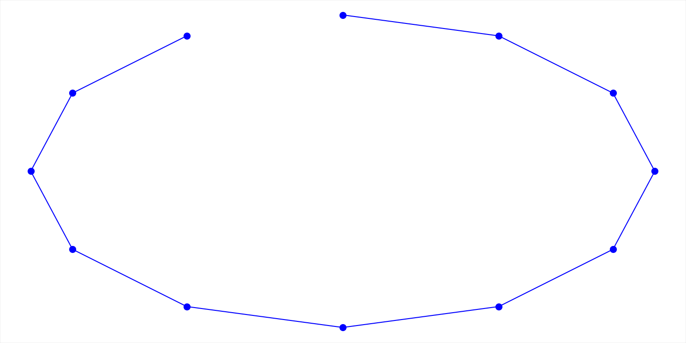

[1,2,3,4,5,6,7,8,9,10,11,12] 
[1,2,3,4,9,6,7,8,5,10,11,12]
[1,2,3,4,5,6,7,8,9,10,11,12]
[1,2,3,4,9,8,7,6,5,10,11,12]
def objective_function(order):
coordinates = [positions[n] for n in order]
leg_lengths = list(map(distance, coordinates[1: ],
coordinates[ :-1]))
return int(floor(sum(np.cumsum(leg_lengths))))
>>> np.cumsum([1, 2, 3, 4, 5, 6, 7, 8, 9, 10])
array([1, 3, 6, 10, 15, 21, 28, 36, 45, 55])
The organisers provided an Excel file demonstrating any calculation interactively.
The pistes in numerical order: 212125
149084
141621
134941
(Computation time: a few hours)
Initial neighbour definition:
126544
118341
(Computation time: a few more hours)
Better neighbour definition:
87313
71953
(Computation time: a few minutes)
Computer found this whilst I was doing it.
With this technique, the answer can regularly be found in under 3 minutes.
Slides:
https://mdcge.github.io/SVOR/presentation/presentation.html
Code: